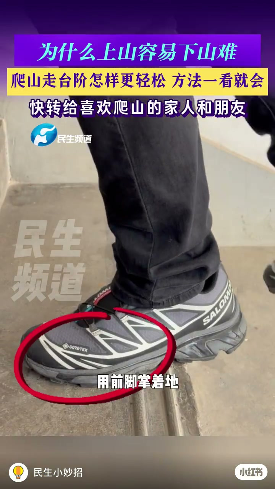
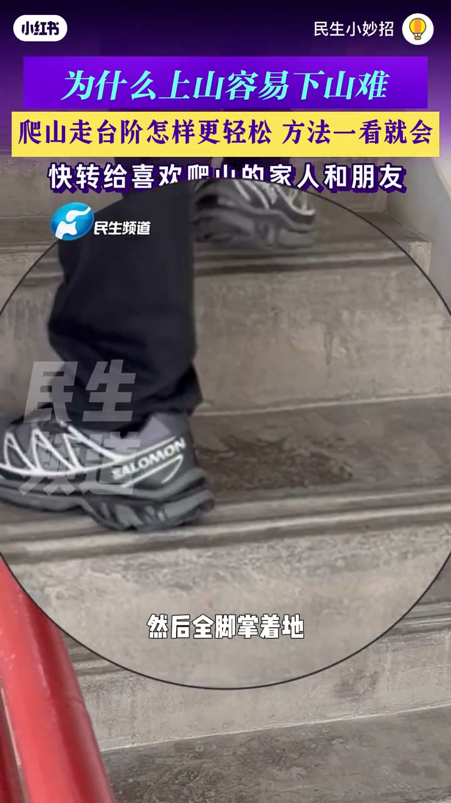
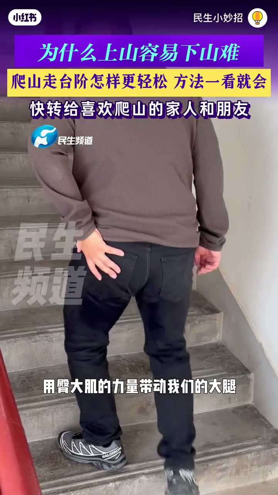
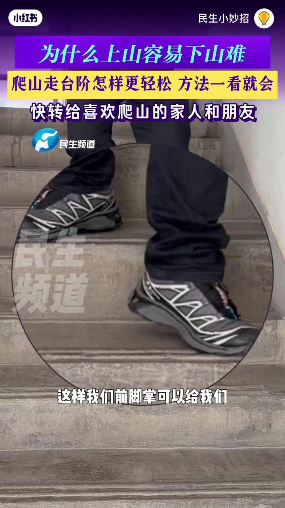

内容要点
整段只有一个说话人。姓名和职称来自画面下三分之一的字幕条，口播没有自报家门。笔记标题问的是爬山走台阶怎样更轻松，片头横幅同时写着「为什么上山容易下山难」。拍摄地点口播没说，开场画面角标写着「10月3日 河南郑州」。
知识结构
他先演示假期爬山时「脚这样正着踩、用前脚掌着地」。烧录字幕把发力写成股四头肌，并说对膝盖的压力会很大。Whisper 把肌名听成「卤丝补」，把后半句听成「压力不可」，正文以字幕为准。
省力走法是外八，然后全脚掌着地，臀大肌收紧，用臀部力量带动大腿。他的原话是这样做「膝盖就比较省力」。画面里演示者从背后上台阶，右手按在右侧臀部。
下台阶时他把身体自重说成给膝盖「提升了数倍冲击力」。对策仍是外八，字幕称为鸭子步伐，前脚掌先着地，用来缓冲、减轻膝盖压力。倍数没有测量画面。
上台阶踩实整只脚、用臀大肌带腿；下台阶脚尖外开、前脚掌先落地。两套着地方式不要对调。股四头肌和「数倍冲击」都是片中说法，不是实验室读数。
00:00–00:08
先把正着踩的前脚掌标成费膝盖
开场是室内采访。侯小杰穿深蓝色拉链外套，戴黑框眼镜，左侧有人把印着「民生频道」的话筒递过来。片头三条字一直压在画面上方：紫底「为什么上山容易下山难」，黄底「爬山走台阶怎样更轻松 方法一看就会」，下面一行「快转给喜欢爬山的家人和朋友」。账号角标是「民生小妙招」。
口播从假期外出爬山直接进入台阶。他要观众看「脚这样正着踩」，接着是「用前脚掌着地」。画面切到水泥台阶，灰黑登山鞋的前半截被红圈圈住，字幕同步写成「用前脚掌着地」。这是他要否定的着地，不是后面下台阶那个前脚掌缓冲。

下一镜红箭头指向迈出腿的大腿前侧。字幕把听写里的「卤丝补」写成「用力的是股四头肌」，并把「对膝盖压力不可」补全成「对膝盖的压力会很大」。肌名和压力大小都只出现在字幕和口播里，画面没有解剖图，也没有压力数值。
「那么我们用力的是股四头肌，对膝盖的压力会很大。」字幕如此。转录原文是「卤丝补」「对膝盖压力不可」。
00:08–00:18
上台阶改外八，脚掌踩实，手按臀部
大约九秒，他回到镜头前，字幕条亮出身份：河南省摔跤队运动康复治疗师侯小杰。口播给出上台阶「比较省力的步伐」：外八，然后全脚掌着地。

全脚掌之后，他接着讲臀大肌收紧，用臀大肌的力量带动大腿。演示改成背面：棕色上衣、黑裤，人正在上台阶，右手按在右侧臀部，像是在指给观众这块肌肉。字幕与口播一致：「用臀大肌的力量带动我们的大腿」。外八偏多少度，片中没有说。

这一段的收束是他的判断，不是测量结果。
「这样的话我们的膝盖就比较省力。」
00:18–00:32
下台阶仍外八，前脚掌改做缓冲
十八秒后话题换成下台阶。他先讲负荷从哪来：身体自重给膝盖「提升了数倍冲击力」。采访画面的字幕停在「膝盖提升了数倍冲击力」。倍数没有秤、没有测力台，只能记成说话人的强调。
对策又是外八。口播被听成「压字步」，烧录字幕写成「也就是我们的鸭子步伐」。接着要求用前脚掌着地。这里的前脚掌和开头那一圈红标不是同一件事：开头是正着踩时被他说成费膝盖的着地，这里是外八之后用来缓冲的着地。

口播把这个着地说成给膝盖「提供一种充分的缓冲」，从而减轻膝盖的压力。片尾字幕比口播多两个字，写成「从而帮助减轻膝盖的压力」。视频在这句上结束，没有示范山路、负重或湿滑台阶。
「用这种外八步伐，也就是我们的鸭子步伐，用前脚掌着地。」鸭子步伐以字幕为准。